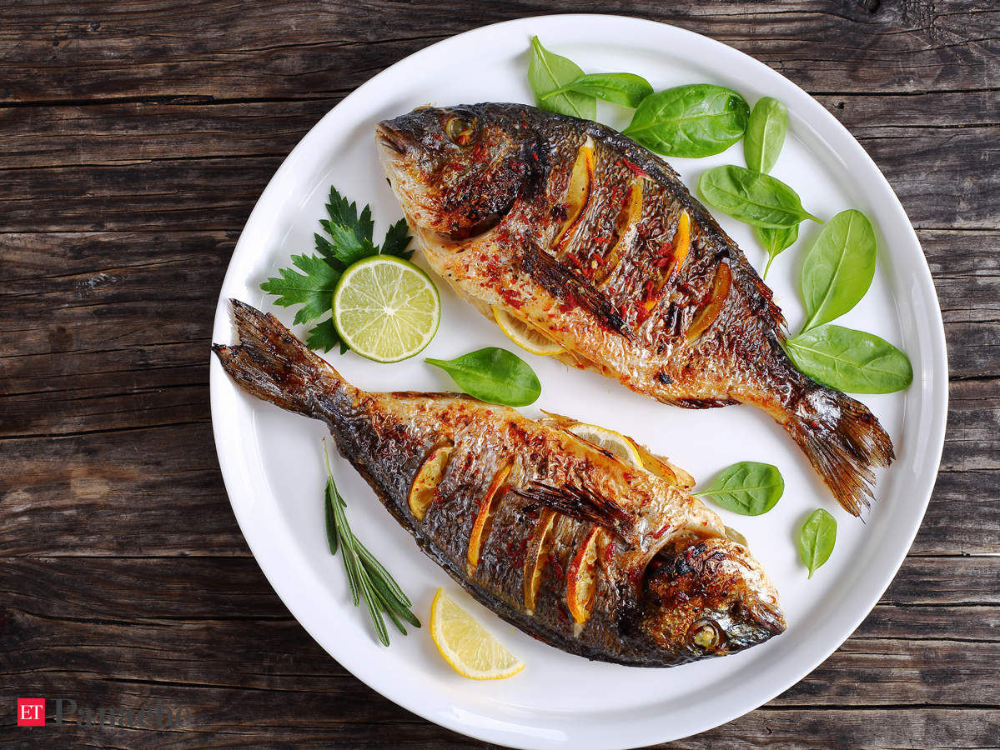
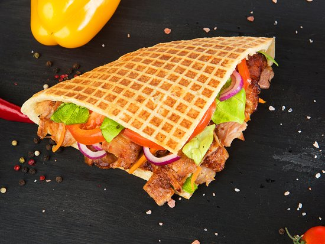

Fried rice
Fried rice is usually mixed with other ingredients such as eggs, vegetables, seafood, or meat.
1 plate serves 2 people
R50

grilled checken
are barbecued, grilled or smoked.. Barbecue chicken is often seasoned or coated in a spice rub, barbecue sauce, or both..
1 plate serves 2 people
R35
hothoneybetter
Vigorously whisk butter, honey, hot sauce, and salt,very delicious.
1 cup serves 1
R25
fish
Dry Food: When you think of fish food, you think of flakes. · Frozen Food: Some fish will enjoy frozen food, such as shrimp, bloodworms, plankton, prawn, krill,
1 plate serves 1
R25

steak
Generously season steaks with salt and pepper.butter to pan, then immediately top with one steak. butter.
1 plate serves 2 people
R35
Royal
Egg rolls are a variety of deep-fried appetizers.An egg roll is a cylindrical, savory roll with shredded cabbage, chopped pork, and other fillings inside a thickly-wrapped wheat flour skin, which is fried in hot oil
1 plate serves 2 people
R35